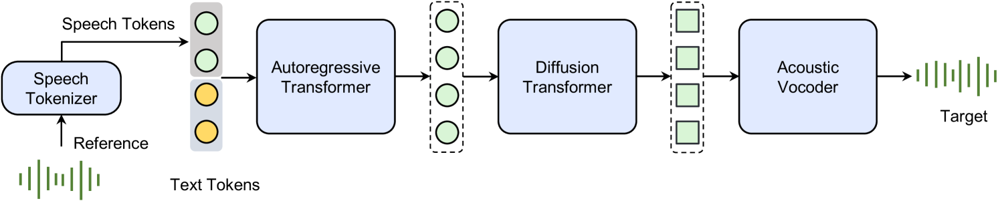
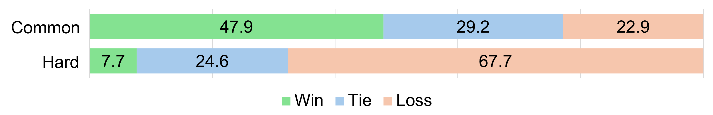
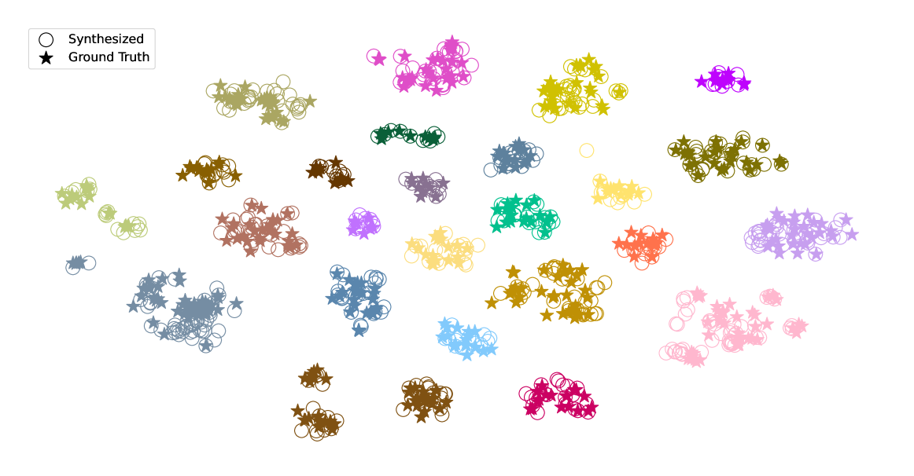
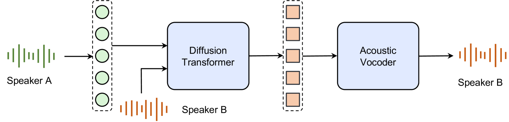
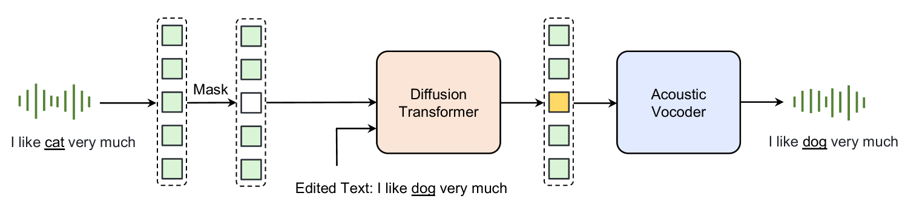
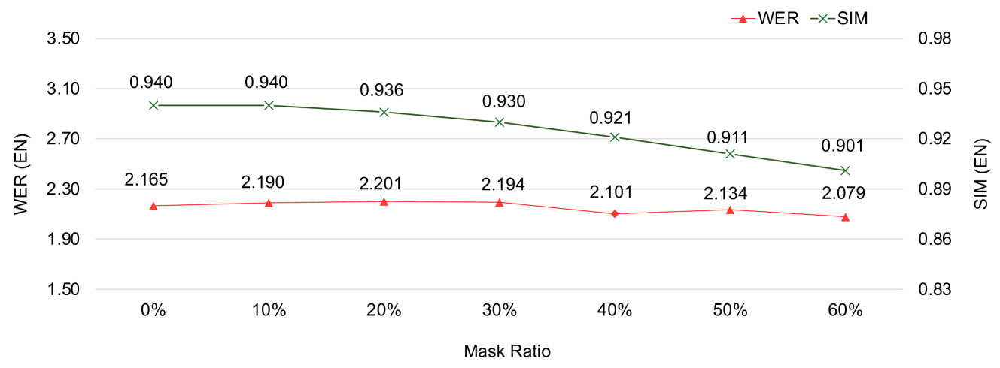
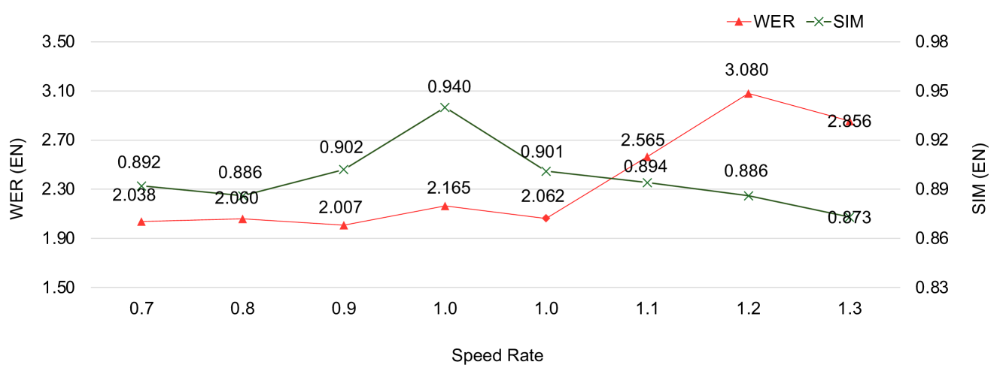

Seed-TTS: A Family of High-Quality Versatile Speech Generation Models
语音合成（Text-to-Speech, TTS）技术在过去数十年经历了从参数模型到端到端神经模型的演进，但现有系统在自然度、表现力、鲁棒性和可控性方面仍存在明显不足。基于语言模型（Language Model, LM）的 TTS 系统（如 VALL-E、SPEAR-TTS 等）虽然展示了零样本语音克隆的潜力，但普遍面临稳定性差、生成质量不一致的问题；基于扩散模型（Diffusion Model）的非自回归方法则依赖预估计的音素时长预测器，限制了端到端生成能力。
Seed-TTS 的核心目标是构建接近人类水平的语音生成基础模型，能够对任意说话人在少量参考音频条件下生成高保真、高表现力的语音。团队希望该模型不仅能胜任传统的 TTS 任务，还能作为语音生成的基础模型（Foundation Model），衍生出语音上下文学习（In-Context Learning, ICL）、说话人微调、情感控制、声音转换等多种能力。此外，团队还深入探索了自蒸馏（Self-Distillation）实现语音属性解耦、强化学习（Reinforcement Learning, RL）提升模型鲁棒性与可控性，以及全扩散变体 $\text{Seed-TTS}_{\text{DiT}}$ 对比 LM 与扩散两种建模范式。
Seed-TTS 采用自回归 Transformer 作为核心架构，整个推理管线由四个模块组成（如图 1 所示）：

语音分词器（Speech Tokenizer）：将语音信号转换为语音 token 序列。团队研究了连续和离散两种分词器设计，发现分词器的选择对系统整体性能至关重要。
Token 语言模型（Token LM）：在文本-语音 token 对序列上训练，推理时以自回归方式生成语音 token。训练中掩蔽了文本序列的损失（专注于语音生成任务）。
Token 扩散模型（Token Diffusion Model）：接收语言模型生成的语音 token，增强声学细节，以从粗到细的方式生成连续语音表示。
声学 Vocoder：将扩散模型输出转换为最终波形。Vocoder 独立训练，设计思路与 Kumar et al. (2024)、Lee et al. (2022) 等工作类似。
与文本语言模型类似，Seed-TTS 采用预训练 → 微调 → 后训练三阶段流程：
Seed-TTS 相比先前模型有两个突出优势：
自然度与表现力：在各种挑战性场景（如喊叫、哭泣、高度情感化语音）下展现出优越的合成质量，这些场景对先前 TTS 系统而言极为困难甚至不可能。
稳定性：LM-based TTS 系统长期存在的稳定性问题严重阻碍实际部署。Seed-TTS 通过 token 和模型设计改进、增强的训练与推理策略、数据增强以及强化后训练的组合方案，显著提升了鲁棒性。
ICL（零样本语音续接）是 Seed-TTS 的核心评估任务：给定一段 3-20 秒的参考语音，生成与参考说话人音色和韵律一致的新文本语音。
测试集分为两组：
评估指标：
选取 5 个说话人（3 女 2 男），每人 1-10 小时数据，总计 20 小时进行 SFT。对比基座模型 $\text{Seed-TTS}_{\text{ICL}}$（使用 20 秒随机音频提示）与微调模型 $\text{Seed-TTS}_{\text{SFT}}$。
IFT 在 SFT 模型之上进一步引入指令微调，使模型能够根据指令信号控制情感、语速、风格等属性。以情感控制为例，训练 SER 模型评估四种基本情感的识别准确率。
实际部署需要解决延迟、首包延迟和计算成本问题。优化措施包括：因果扩散架构支持流式处理、一致性蒸馏与改进的 Flow Matching 降低扩散计算成本、分组查询注意力、分页注意力、Flash Attention 和模型量化。
Table 1 展示了 Seed-TTS ICL 与真实人类语音及 Vocoder 重合成语音的对比：
| 系统 | 语言 | WER ↓ | SIM ↑ | CMOS ↑ vs Human |
|---|---|---|---|---|
| Seed-TTS | EN | 2.249 | 0.762 | -0.07 |
| Vocoder resyn | EN | 2.165 | 0.702 | — |
| Human | EN | 2.143 | 0.730 | — |
| Seed-TTS | ZH | 1.115 | 0.796 | -0.08 |
| Vocoder resyn | ZH | 1.342 | 0.733 | — |
| Human | ZH | 1.254 | 0.750 | — |
关键发现：

对"常见"说话人，Seed-TTS ICL 获得了 47.9% 的偏好率，在自然度和表现力上具有明显优势。对"困难"说话人（强口音或极端说话风格），传统微调模型表现更强，因为 15 秒提示可能无法充分覆盖说话人的代表性韵律。
通过"text-wave shuffling"策略合成 LibriSpeech 960 小时训练集的合成版本，用于训练 ASR 模型：
| 训练数据 | dev_clean | dev_other | test_clean | test_other |
|---|---|---|---|---|
| 合成数据 | 2.59 | 7.78 | 2.76 | 7.58 |
| 真实数据 | 2.26 | 5.97 | 2.45 | 5.98 |
clean 集上合成数据训练的 ASR 与真实数据训练的接近；noisy 集上有 1.6-1.8% 的绝对 WER 差距，推测是 Seed-TTS 在生成过程中倾向于减少背景噪声所致。这表明合成数据在语音理解模型开发中具有应用潜力。

t-SNE 可视化验证了同一说话人的真实与合成语音嵌入可靠聚类，支持 Seed-TTS 合成语音在音色保真度上接近真实人类语音的结论。
| 系统 | WER ↓ | SIM ↑ | CMOS ↑ |
|---|---|---|---|
| $\text{Seed-TTS}_{\text{ICL}}$ | 3.15 | 0.779 | — |
| $\text{Seed-TTS}_{\text{SFT}}$ | 2.83 | 0.789 | +0.37 |
SFT 在客观指标上与 ICL 相当，但在主观评分上 CMOS = +0.37，表明微调模型更好地捕获了说话人的微妙韵律变化和发音特征。
情感控制结果：
| 系统 | Angry | Happy | Sad | Surprise |
|---|---|---|---|---|
| $\text{Seed-TTS}_{\text{SFT}}$ | 0.69 | 0.40 | 0.37 | 0.22 |
| $\text{Seed-TTS}_{\text{IFT}}$ | 1.00 | 0.85 | 1.00 | 0.98 |
即使没有显式控制信号，SFT 模型仍能通过文本内容推断适当情感（中等准确率）；加入指令信号后，IFT 模型在所有情感上均达到极高准确率。
| 系统 | Latency ↓ | RTF ↓ | WER ↓ | SIM ↑ | CMOS ↑ |
|---|---|---|---|---|---|
| Offline 模型 | 1× | 1× | 1.518 | 0.763 | — |
| Deployed 模型 | 0.028× | 0.132× | 1.518 | 0.763 | -0.02 |
部署模型在主观和客观指标上与离线模型几乎相同，但延迟降低 36 倍、RTF 降低 7.5 倍，满足实际应用需求。
语音属性解耦（Speech Factorization）指将语音分解为独立的属性（如音色、韵律、内容），使 TTS 系统能灵活组合不同说话人的属性。现有方法多依赖特征工程、特殊损失函数或网络架构调整，难以直接集成到通用语音生成系统中。
Seed-TTS 提出一种自蒸馏（Self-Distillation）方案：利用 Seed-TTS 本身的高质量零样本生成能力，通过在扩散模块中引入说话人扰动（Speaker Perturbation），生成内容与韵律相同但音色偏移的合成语音对 $(S_{\text{ori}}, S_{\text{alt}})$。然后用这些数据对重新训练扩散模块：以 $S_{\text{alt}}$ 的 token 作为输入，以 $S_{\text{ori}}$ 的音色参考嵌入为条件，优化目标为恢复 $S_{\text{ori}}$ 的 vocoder 嵌入。网络必须忽略 $S_{\text{alt}}$ token 中的音色信息，仅依赖提供的音色嵌入来恢复 $S_{\text{ori}}$，从而实现音色解耦。

零样本声音转换（Voice Conversion, VC）结果：
| 系统 | ZH WER ↓ | ZH SIM ↑ | EN WER ↓ | EN SIM ↑ |
|---|---|---|---|---|
| DiffVC | — | — | 16.861 | 0.311 |
| HierSpeech++ | — | — | 5.469 | 0.387 |
| Seed-TTS w/o self-distill | 1.489 | 0.636 | 2.366 | 0.491 |
| Seed-TTS w/ self-distill | 1.216 | 0.791 | 2.121 | 0.753 |
自蒸馏方案显著提升 SIM（英文从 0.491 到 0.753，中文从 0.636 到 0.791），并在所有维度优于现有 SOTA 方法，且无需修改模型结构或损失函数。
团队探索了 RL 方法（PPO、REINFORCE、DPO）来提升 Seed-TTS 的多个方面。使用 REINFORCE 微调了两个版本：
RL-SIM-WER 在客观指标上全面优于 ICL 基线（中文 WER 从 1.115 降至 1.002，SIM 从 0.796 升至 0.801；困难集 WER 从 7.585 降至 6.423），主观偏好 CMOS = +0.14（44.1% 胜、25% 平、30.9% 负）。
RL-SER 将情感控制准确率大幅提升：Angry 0.46→0.91, Happy 0.44→0.80, Sad 0.53→0.78, Surprise 0.13→0.82。
团队也观察到了奖励黑客（Reward Hacking）现象：为获得更低 WER，模型倾向于生成更慢、更清晰的语音，牺牲了自然度。这需要在网络调优中仔细权衡。

$\text{Seed-TTS}_{\text{DiT}}$ 去除了扩散模型与声学分词器的依赖关系，扩散模型直接从高斯噪声预测 vocoder 的潜在表示，仅基于输入文本端到端生成语音。关键创新：
零样本 TTS 客观评估：
| 系统 | 语言 | WER ↓ | SIM ↑ |
|---|---|---|---|
| Human | EN | 2.143 | 0.730 |
| Vocoder resyn | EN | 2.165 | 0.702 |
| $\text{Seed-TTS}_{\text{ICL}}$ | EN | 2.249 | 0.762 |
| $\text{Seed-TTS}_{\text{DiT}}$ | EN | 1.733 | 0.790 |
| Human | ZH | 1.254 | 0.750 |
| Vocoder resyn | ZH | 1.342 | 0.733 |
| $\text{Seed-TTS}_{\text{ICL}}$ | ZH | 1.115 | 0.796 |
| $\text{Seed-TTS}_{\text{DiT}}$ | ZH | 1.178 | 0.809 |
$\text{Seed-TTS}_{\text{DiT}}$ 在 SIM 上优于 $\text{Seed-TTS}_{\text{ICL}}$（英文 0.790 vs 0.762，中文 0.809 vs 0.796），WER 在英文上更低（1.733 vs 2.249），表明扩散模型具有强大的序列建模能力。


内容编辑任务中，模型遮蔽一定比例的音频并根据提供的文本恢复被遮蔽部分，在各种遮蔽率下均保持鲁棒。语速编辑中，模型能仅根据不同的总时长自动调整语速——拉长时长时自动在合适位置插入停顿或延长元音发音，保持自然范围内的语速。
局限性：
安全考量：团队在产品中实施了多重安全措施，包括多步验证确保注册音频仅含授权用户语音、多层级水印方案（视频背景水印、内容描述水印等）。
未来方向：
Seed-TTS 是一项系统性很强的技术报告，从基础模型架构设计到训练策略、模型扩展和部署优化，覆盖了语音生成领域的多个关键维度。其最有价值的贡献在于：
工程验证了大规模语音生成基础模型的可行性。Seed-TTS 用远超前人的数据和模型规模证明了"大模型 + 大数据"范式在语音生成领域的有效性，首次在零样本 ICL 下达到与真实人类语音难以区分的水平，这是里程碑式的进展。
自蒸馏方案简洁有效。相比特征工程、特殊损失函数等复杂方案，利用模型自身的生成能力构造训练数据对的思路既优雅又实用，仅重新训练扩散模块就实现了高质量音色解耦，工程实施成本低。
$\text{Seed-TTS}_{\text{DiT}}$ 对 LM 与扩散的对比有方法论价值。在相同训练数据条件下对比两种范式，结果表明扩散模型在 SIM 上更优且天然支持编辑任务，而 LM 方式则支持流式处理和与文本 LM 的融合——这为后续的范式融合研究指明了方向。
值得关注的不足：报告未公开模型参数量、训练数据规模的具体数值，仅以"数个数量级更大"描述，透明度有限。此外，与先前系统的对比大多仅在早期开发阶段进行（CMOS < -1），缺少与同期 SOTA 的直接对比实验。强化学习部分的展示相对初步，仅展示了 REINFORCE + 外部奖励的结果，未详细讨论 DPO 等方法的实验。
总体而言，Seed-TTS 代表了 2024 年语音生成领域的技术前沿，其大规模基础模型思路、自蒸馏解耦和全扩散变体等工作对后续研究具有重要参考价值。